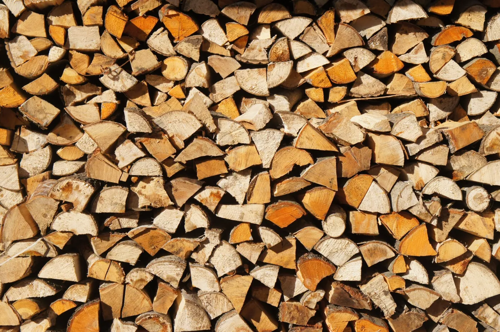
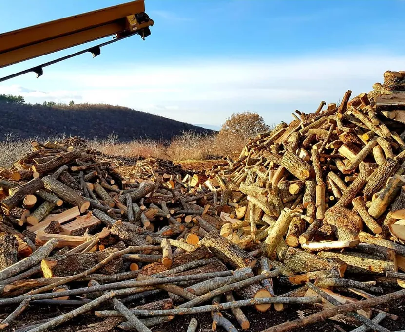
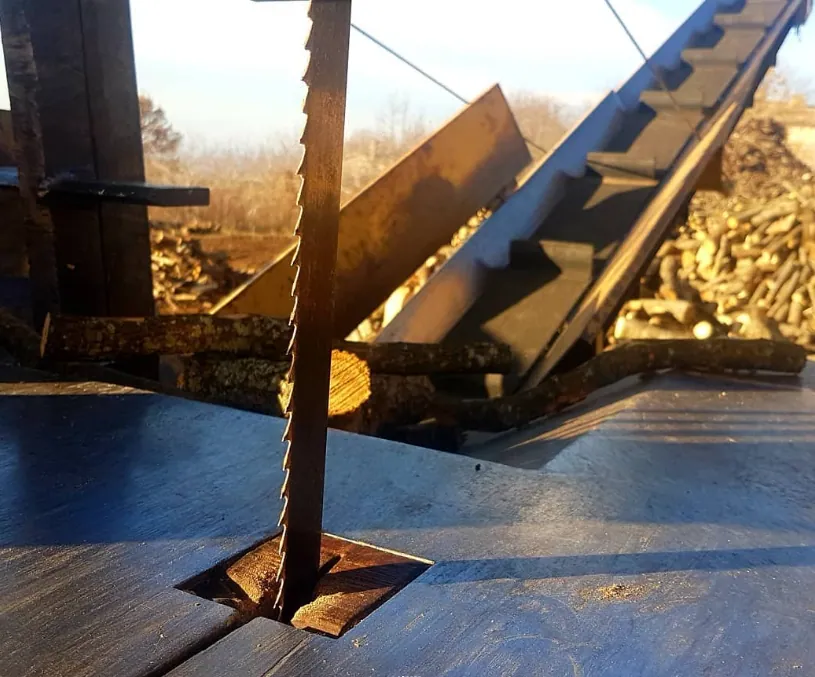

Vendita legna da ardere a Trevi, Foligno e Spoleto

Vendita legna da ardere Trevi

Offriamo legno di carpine e quercia, noto per l’alto potere calorifico, ideale per stufe e camini. Garantiamo un calore costante e duraturo, con spedizioni gratuite nel comune di Trevi e zone limitrofe.
Ordine minimo di 10 quintali.
Contattaci oggi per un inverno caldo e confortevole!
Uso Stufa e Camino
Legna perfetta per stufe e camini, per un calore costante e duraturo
Spedizione Gratuita
Consegne rapide e senza costi aggiuntivi nel comune di Trevi e nelle zone limitrofe.
Quantità Minima
Si accettano ordini solo per quantitativi superiori a 10 quintali.
Legno Macchia Locale
Offriamo legno di carpine e quercia, noti per il loro alto potere calorifico: la scelta ideale per riscaldare la vostra casa.

Rispetto per l'ambiente
La produzione della legna da ardere è svolta con un profondo rispetto per l'ambiente e secondo i criteri più rigorosi delle normative ambientali. Durante le operazioni, lasciamo intatte piante selezionate per permettere alla vegetazione di ricostituirsi naturalmente in pochi anni. Questo processo non solo conserva l’aspetto autentico del nostro paesaggio, ma contribuisce anche a mantenerlo pulito, ordinato e curato, evitando quella sensazione di abbandono che spesso si percepisce in zone trascurate. In questo modo, la nostra attività non si limita a produrre legna da ardere di qualità per i nostri clienti, ma diventa anche un gesto concreto di gestione sostenibile del territorio. La cura costante e l’attenzione all’equilibrio ambientale rendono il nostro lavoro un contributo prezioso alla bellezza e alla vitalità del nostro paesaggio.
l'organizzazione del lavoro
La stagione della raccolta delle olive rappresenta un periodo cruciale che occupa circa tre mesi dell'anno, richiamando un gran numero di lavoratori per gestire l’intensità del lavoro. Allo stesso tempo, la cura degli animali e la produzione dei formaggi richiedono una presenza costante del personale durante tutto l'anno, con momenti di particolare intensità, come nel periodo delle nascite degli agnelli. In questo contesto, la produzione di legna da ardere si inserisce come una componente strategica. Non solo ci permette di ottimizzare la distribuzione del lavoro degli operai durante i periodi meno impegnativi delle altre attività, ma garantisce anche continuità lavorativa. Questo equilibrio è fondamentale per sostenere il nostro team e mantenere alta la qualità dei nostri prodotti e servizi.

CONTATTI
Scrivici o chiamaci per acquistare la nostra legna.

- Azienda Medei, Loc. le Case N.5, 06039 Coste di Trevi (PG)
- Email: azienda.medei@gmail.com
- Marco: 3284055498
- Massimo: 3474110391
- Marzio: 3396830953
Dove posso comprare?
Tutti i nostri prodotti sono disponibili all'interno del nostro sito.
Contattaci per maggiori informazioni.